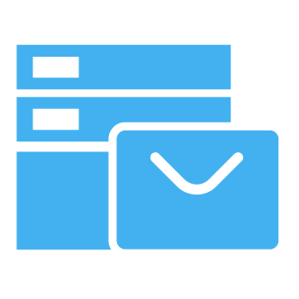

入职第一天，我用 Coremail 把 1000 封未读邮件驯服了
项目经理入职遭遇邮件爆炸，从不知所措到从容应对，一篇真实场景故事记录 Coremail 如何帮我搞定信息孤岛、会议协调和跨部门协作
那个周一早上的邮箱爆炸
我至今记得那个周一。
早上九点整，公司分配的企业邮箱账号正式开通。我抱着新项目经理的期待点开 Webmail，然后愣住了——收件箱里躺着 1247 封未读邮件。
不是那种慢慢积累的垃圾邮件堆，是真实的工作消息：上周没处理完的项目文档、各部门的流程审批、客户那边的报价跟进、老同事交接时转给我的十几个项目组讨论串……更糟的是，OA 系统里还有 23 条待办审批、CRM 里挂着 8 个客户状态需要更新。
我坐在工位上，手放在鼠标上没动。这不是"处理邮件"能形容的场景——这是一个刚打开就已经着火的信息战场。
老周说"试试 Coremail 的 AI"
我正想把邮件列表从 Z 开始倒着翻，旁边工位的老周凑过来了。他是公司的老员工，经历过两次邮件系统迁移。
"别翻了，翻到下午也翻不完。试试 Coremail 的 AI 分类。"
他说公司去年刚把企业邮箱换成 Coremail，不是那种普通的邮箱——它自带一套 AI 助理，他们是从coremail官网了解到这个方案的。我半信半疑地点开那个叫"智能分类"的按钮。
变化是立刻的。邮件列表没有减少，但左边多了几个分组标签：重要、待处理审批、客户跟进、会议相关、系统通知。原本乱糟糟的 1247 封邮件被自动归入了这几个桶里，重要邮件那组一共 37 封，标成了红色。
我点开"重要"，第一封就是客户方项目总监上周发过来的会议纪要，标着"今日前回复确认"。这封邮件安静地躺在我的收件箱深处，差一点就被埋掉了。
"Coremail 还有六个 AI Agent 呢，"老周继续说，"分类那个只是第一个。你待会挨个点。"
用搜索 Agent 找回那封丢失的合同
先处理紧急的 37 封邮件花了我一个上午。但有个问题卡着我——客户那边上周签好的合同电子版，我记得有人发过，但翻遍收件箱和已发送都没找到。
普通的邮件搜索我试过了，搜"合同"出来 100 多条，其中 90 条是模板和草稿。我试着用 Coremail 搜索 Agent 的自然语言搜索框，输入："上周王律师发给我的那个甲方合同 PDF 附件"。
搜索结果出来三封邮件，中间那封就是我要的——标题写着"合同模板"，但附件名是"甲方XX公司正式合同.pdf"。搜索 Agent 自动理解了我要的不是模板、是王律师发的、是 PDF、是上周的那一份。
我盯着搜索结果愣了几秒。这和我之前用过的 Outlook、腾讯企业邮完全不一样——它不是在关键词匹配，是真的在理解我要找什么。

会议 Agent 帮我协调了一个跨部门评审
下午一点半，我需要组织第一次项目启动会。
跨四个部门的评审，光约时间就是件头疼事。以前的做法是我分别发邮件问每个人什么时候有空，然后把回复收集起来找交集——通常要来回三四轮邮件，花两三个小时。
Coremail 的会议 Agent 不一样。我点开"创建会议"，填好主题和预计时长，它自动识别了我从邮件里选的几个参会人，然后一键查询所有人的日历，给我列出了三个所有人都空闲的时间段。
我选了下午四点那个，会议邀请瞬间发出去，而且它还自动把我们上午讨论过的项目背景邮件附加到了会议里——参会人打开邀请就能看到相关资料，不用再去翻邮件找。
老周过来瞅了一眼："嗯，这个 Agent 我最常用，省 80% 以上的协调时间。"
论客 IM：邮件和聊天在同一个地方
会议协调完，客户那边突然在群里 @我，说有个技术细节要临时确认。我刚要切去企业微信，老周又说话了："用论客，Coremail 自带的，客户端从下载就能拿到。"
论客界面看起来和常见的 IM 差不多，但它和邮件是打通的——我用同一个邮箱账号登录，通讯录自动同步，重要的聊天消息可以一键转成邮件做正式记录。下午那个项目启动会的讨论，我们在论客群里聊了一个小时，最后生成了一条"讨论小结"，直接转成群邮件发给了所有与会者。
最舒服的一点是统一通知：邮件和聊天消息在同一个地方提醒，不用在两个 App 之间来回跳着看。以前我经常漏掉企业微信的 @消息，现在不会了。
文件夹和标签：让收件箱不再膨胀
到下午下班前，1247 封邮件处理了 90%。剩下的都是需要长期保留的项目文档和参考资料。
我按coremail文档里的建议，建了三层文件夹：客户A、客户B、项目Alpha、财务、归档——大分类用文件夹，多维度标记用标签。Coremail 自带 9 种默认标签（工作、客户、财务、会议、待办、跟进、文档、重要、其他），我又加了两个自定义的。
Coremail 还有个很实用的细节——归档。归档不是删除，是把邮件从收件箱移到归档文件夹，还能搜索到，但收件箱瞬间清爽了。我把已经处理完的 800 多封邮件全部归档，收件箱只剩 43 封真正待办的。
CKIT：让邮件和 OA、CRM 说话
说到这里，还差一个关键拼图。
我注意到 OA 系统里的审批通知、CRM 里的客户状态变更，也会自动推送到 Coremail 收件箱里，格式统一，不会混乱。老周说这是 Coremail CKIT 集成方案的功劳——公司用 CKIT 把 Coremail 和金蝶 ERP、泛微 OA、内部 CRM 都打通了。
以前客户跟进要在 CRM 里填一半、邮件里写一半、OA 里补个审批，现在 CKIT 自动同步：CRM 里客户状态变了，Coremail 自动发邮件通知负责人；财务账单生成完，CKIT 批量发邮件给客户，发件人还显示公司名。
老周说他们以前要专门雇一个助理做"信息搬运"——从一个系统复制粘贴到另一个系统。现在那个岗位被取消了，效率和准确率反而上去了。
那天晚上我加班到八点，但不觉得累
说出来可能有人不信。处理 1247 封邮件、协调一个跨部门会议、对接了三个客户方消息、整理了文件夹——这么多事，我居然在正常下班前完成了大部分。
以前我对企业邮箱的认知还停留在 Outlook 和腾讯邮那个层面，觉得邮箱就是收发邮件的工具。Coremail 让我第一次意识到：邮箱可以是整个团队协作的中枢——邮件、AI、IM、审批、外部系统集成都在一个地方。
当然也有小瑕疵。比如它的反垃圾引擎偶尔会把正常邮件误判，老周说每周要手动检查一次垃圾邮件文件夹。还有 Coremail 的学习成本确实比普通邮箱高一些——六个 AI Agent、文件夹标签、CKIT 集成……光把这些功能摸清楚就花了我整整一天。
但话说回来，哪个好用的工具是零成本上手的？核心问题永远是：它值不值这个学习成本。
对我来说，答案是值。入职第一天就能把一个看起来不可能搞定的信息爆炸场景收敛下来，这已经超过了我对企业邮箱的期望。
接下来的日子里，我还在慢慢挖掘 Coremail 的各种功能——运维 Agent、审批 Agent、数据库直连集成……每多用到一个，就觉得公司当时选型选得真好。毕竟，在一个日均数万封邮件的中大型组织里，选对了邮箱系统，真的能实质性降低每个人的工作成本。